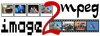

Diashows erstellen
Die hier aufgeführten Diashow-Programme sind darauf spezialisiert, mehrere Bilddateien in einem Video zusammengefasst ansprechend zu präsentieren. Dabei können typischerweise die Anzeigedauer des Einzelbilds und zusätzlich Übergangseffekte sowie eine Hintergrundmusik ausgewählt werden. Diese Seite soll einen kurzen Überblick über die für Ubuntu verfügbaren Programme geben. Die Reihenfolge stellt keine Empfehlung dar, sondern ist rein alphabetisch.
Wer einen Stop-Motion-Film erstellen möchte, braucht ein Programm aus der Übersicht Stop-Motion. Darüber hinaus kann man hierfür auch klassische Videobearbeitungsprogramme wie OpenShot oder Kdenlive einsetzen.
Programme¶

dvd-slideshow¶
dvd-slideshow ist ein Paket von Kommandozeilen-Programmen, welche sich zur Erstellung einer Diashow ("Slideshow") aus Einzelbildern eignen. Die Diashow wird als DVD-kompatibles MPEG2-Video gespeichert. Es können auch komplette Ordner mit Bildern verarbeitet werden.
ffDiaporama¶
ffDiaporama ist ein neueres Programm für Linux und Windows. ffDiaporama ist eines der wenigen Programme, welches Fotos/Bilder und Videoclips kombinieren kann. Es ist ab Ubuntu 12.10 in den offiziellen Paketquellen enthalten, für ältere Versionen steht ein "Personal Package Archiv" (PPA) zur Verfügung.

image2mpeg¶
image2mpeg  ist ein weiteres Werkzeug für die Kommandozeile, das Bilder in MPEG-Videos umzuwandeln kann. Auch Übergangseffekte und Hintergrundmusik sind möglich. Das Programm ist nicht als Paket für Ubuntu verfügbar, sondern muss manuell installiert werden (Abhängigkeiten beachten!).
ist ein weiteres Werkzeug für die Kommandozeile, das Bilder in MPEG-Videos umzuwandeln kann. Auch Übergangseffekte und Hintergrundmusik sind möglich. Das Programm ist nicht als Paket für Ubuntu verfügbar, sondern muss manuell installiert werden (Abhängigkeiten beachten!).
Imagination¶
Imagination ist ein sehr einfach zu bedienender DVD-Slideshow-Editor. Die Ausgabe erfolgt als VOB (MPEG2), Theora/Vorbis, Flash Video oder 3GP. Die Programmoberfläche ist auf Deutsch, das Programm selbst ist in den offiziellen Paketquellen enthalten.
PhotoFilmStrip¶
PhotoFilmStrip erstellt Videoclips aus Bildern in nur 3 Schritten: Bilder auswählen, auf Wunsch Bewegungspfad festlegen und Video erzeugen. Eignet sich wie Imagination besonders für Einsteiger.
Weitere Möglichkeiten¶
Eine andere Variante ist das Erstellen von Diashows als Internetseiten. Diese können auch auf dem eigenen Rechner angezeigt oder zur Weitergabe auf CD/DVD gebrannt werden. Hierzu kommt entweder JavaScript oder Flash zum Einsatz, um die Steuerung der Diashow zu realisieren. Manchmal ist auch Hintergrundmusik möglich. Der Hauptvorteil ist die prinzipielle Unabhängigkeit vom Betriebssystem, denn bei der Erstellung von Videos muss man sich unter Umständen Gedanken zum verwendeten Codec machen, damit das Video auch auf die Zielgerät und nicht nur auf dem eigenen Rechner abspielbar ist.
Während JAlbum ein Spezialist nur für diese Aufgabe ist, können auch viele Bildverwaltungen wie F-Spot oder digiKam Internetseiten erstellen bzw. exportieren. Ein Programm für die Kommandozeile ist fgallery , das ab Ubuntu 16.04 in den offiziellen Paketquellen enthalten ist.
 Übersichtsartikel
Übersichtsartikel- Erstellt mit Inyoka
-
 2004 – 2017 ubuntuusers.de • Einige Rechte vorbehalten
2004 – 2017 ubuntuusers.de • Einige Rechte vorbehalten
Lizenz • Kontakt • Datenschutz • Impressum • Serverstatus -
Serverhousing gespendet von